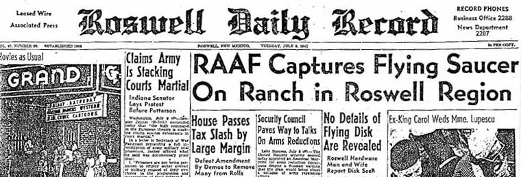

Roswell is a city in southeastern New Mexico.
It's renowned as the site
of an alleged 1947 UFO crash. The International UFO Museum and Research Center has display panels and a library.

Roswell is a city in southeastern New Mexico.
It's renowned as the site
of an alleged 1947 UFO crash. The International UFO Museum and Research Center has display panels and a library.
In the 1990s, the US military published two reports disclosing the true nature of the crashed object: a nuclear test surveillance balloon from Project Mogul. Nevertheless, the Roswell incident continues to be of interest in popular media, and conspiracy theories surrounding the event persist. Roswell has been described as "the world's most famous, most exhaustively investigated, and most thoroughly debunked UFO claim".
Between 1978 and the early 1990s, UFO researchers such as Stanton T. Friedman, William Moore, Karl T. Pflock, and the team of Kevin D. Randle and Donald R. Schmitt interviewed several hundred people who claimed to have had a connection with the events at Roswell in 1947. Hundreds of documents were obtained via Freedom of Information Act requests. Their conclusions were that at least one alien spacecraft crashed near Roswell, alien bodies had been recovered, and a government cover-up of the incident had taken place.
Over the years, books, articles, and television specials brought the 1947 incident significant notoriety. By the mid-1990s, public polls such as a 1997 CNN/Time poll, revealed that the majority of people interviewed believed that aliens had indeed visited Earth, and that aliens had landed at Roswell, but that all the relevant information was being kept secret by the US government.
According to anthropologists Susan Harding and Kathleen Stewart, the Roswell Story was the prime example of how a discourse moved from the fringes to the mainstream according to the prevailing zeitgeist: public preoccupation in the 1980s with "conspiracy, cover-up and repression" aligned well with the Roswell narratives as told in the "sensational books" which were being published.

According to Atlas Obscura, this fast-food outlet is the only space and UFO-themed McDonald's in the world.
Inspired by the extraterrestrial history of Roswell, the interior of the spaceship holds a play place, which is also space-themed. The Roswell UFO incident was named after the town, though the crash site of the alleged UFO was some 75 miles (121 km) from Roswell and closer to Corona. The investigation and debris recovery was handled by the local Roswell Army Air Field. In the 1930s, Roswell was a site for much of Robert H. Goddard's early rocketry work. The Roswell Museum and Art Center maintains an exhibit that includes a recreation of Goddard's rocket engine development workshop.
Roswell's tourism industry is based on aerospace engineering and ufology museums and businesses, as well as alien-themed and spacecraft-themed iconography.
Above is a video explaining the Roswell incident and the conspiracy theories that came with it.
On July 8, “RAAF Captures Flying Saucer on Ranch in Roswell Region” was the top story in the Roswell Daily Record. But was it true? On July 9, an Air Force official clarified the paper’s report: The alleged “flying saucer,” he said, was only a crashed weather balloon. However, to anyone who had seen the debris (or the newspaper photographs of it), it was clear that whatever this thing was, it was no weather balloon. Some people believed–and still believe–that the crashed vehicle had not come from Earth at all. They argued that the debris in Brazel’s field must have come from an alien spaceship.